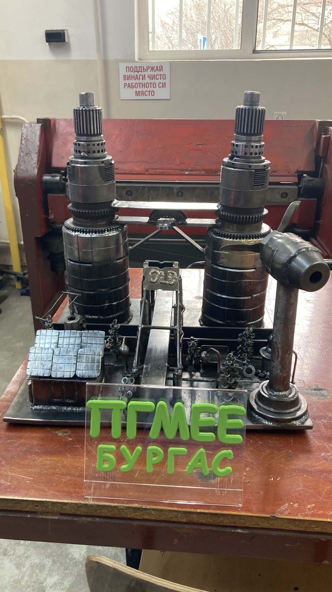
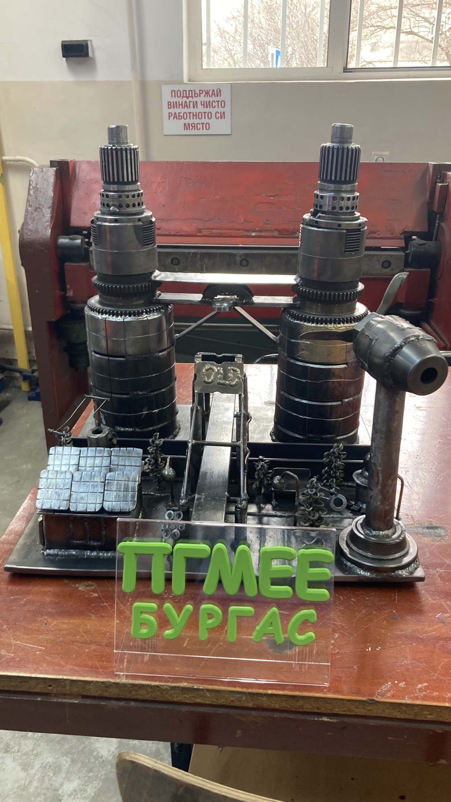
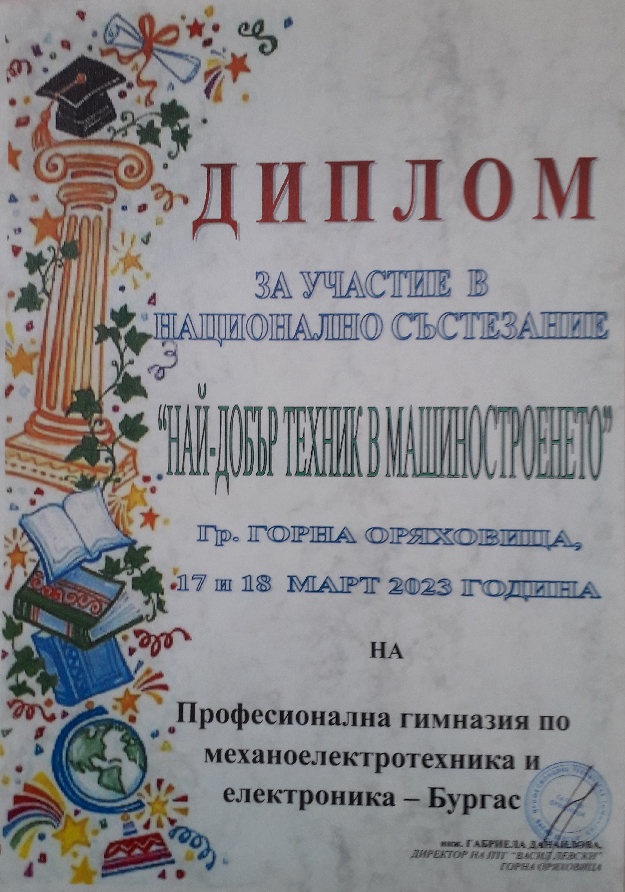
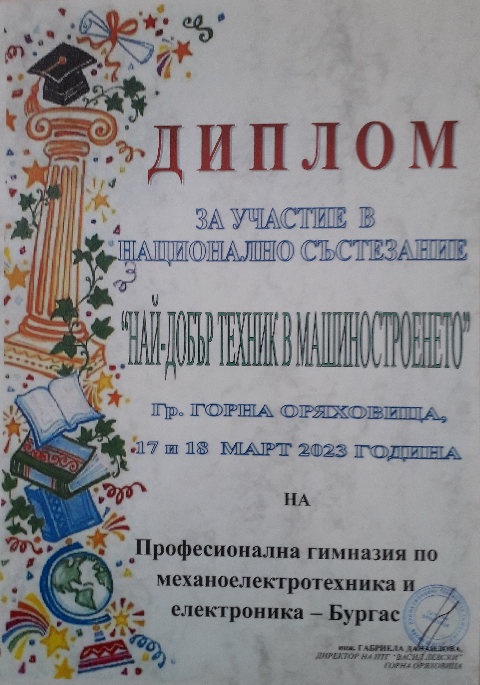

МАШИНОСТРОЕНЕ
Състезание по заваряване 2023г. Arc Cup International Welding Competition
Хакан Емин на 18г., ученик в ПГМЕЕ гр. Бургас – м-д 135/GMAW завоюва ТРЕТО място. Успехът на ученика се дължи на упоритата работа на неговият учител инж. Я. Самоковлиев.
НС “Най-добър млад заварчик” 2022/2023г.
Хакан Емин Емин от 11 г клас и Мартин Веселинов Михнев от 12 б клас с ръководител: инж.Яни Самоковлиев се класира на ПЪРВО място.
В категория МИГ – МАГ заваряване Хакан Емин се класира на трето място.
 

НС “Най-добър млад заварчик” 2021/2022г.
ПГМЕЕ участва с отбор в състав: Николай Добрев и Валентин Тенев, ученици от 12 б клас. Ръководител на отбора е инж.Яни Самоковлиев. Отборът на ПГМЕЕ се класира на ПЪРВО място в Националното състезание.
Конкурс –ДЕН на Европа 2023г.
Асим Адемов от 9 клас с ръководител инж.Яни Самоковлиев, завоюва второ място.
НС „Най-добър млад техник в машиностроенето” 2023/2024г.
Учениците от 11 б клас: Мартин Светлозаров Бетов и Иван Георгиев Кадиев, с ръководител инж. Милена Даскалова се класираха на ТРЕТО отборно място. Приети са като студенти в ТУ – Варна.
НС „Най-добър млад техник в машиностроенето” 2022/2023г.
Учениците от 12Б клас Тодор Стоянов Петров и Данаил Ивайлов Динев, с ръководител инж. Милена Даскалова се класираха на десето отборно място. Получиха сертификати за прием в ТУ- Варна като студенти.
 

НС „Най-добър млад техник в машиностроенето” 2021/2022г.
Учениците от 12Б клас Яни Станчев Генов и Николай Здравков Добрев, с ръководител инж. Милена Даскалова се класираха на ВТОРО отборно място. Яни Генов заема ТРЕТО индивидуално място.
През учебната 2014/2015 година колектив от ПГМЕЕ започва работа по Програмата за трансгранично сътрудничество по ИПП България - Турция с проект ''Трансгранично сътрудничество в развитието на професионална обучителна система CAD/CAM’’. Партньор по проекта е Техническо-професионално училище в Къркларели, Турция. По време на проекта са оборудвани кабинети с компютри и софтуер Auto CAD, разработена е методология на обучение, издадени са ръководства на български и турски език. В края на проекта се проведе състезание между отборите на ПГМЕЕ и Техническото-професионално училище в гр.Къркларели. Сюлейман Тунджай Сюлейман се класира на първо място и Теодор Мирославов Пешев заема трето място. Учениците са подготвени от инж. Милена Даскалова.
През учебната 2011/2012г на 28-мата олимпиада по Техническо чертане,
ученикът Калоян Иванов от 10г клас, под ръководството на инж. Веселина Кашукеева спечели ПЪРВО място.